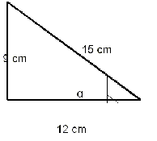
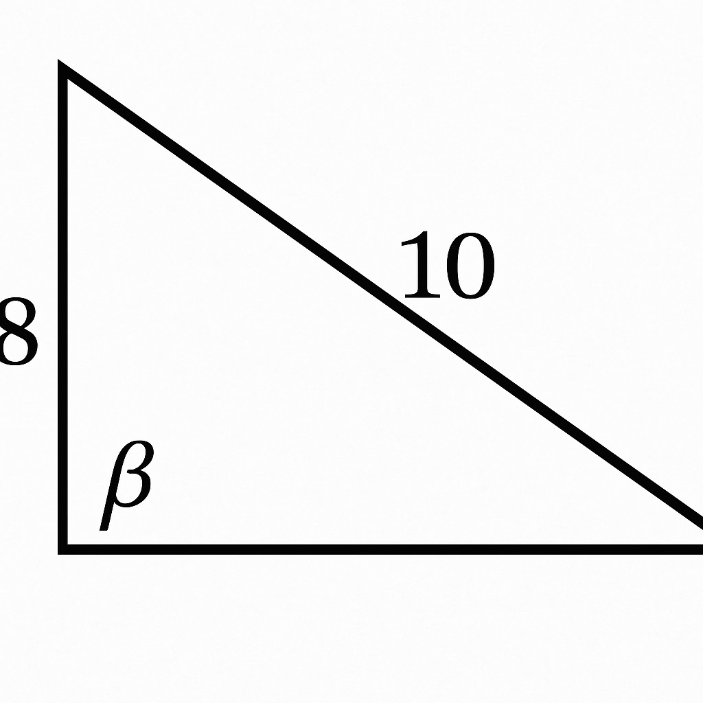
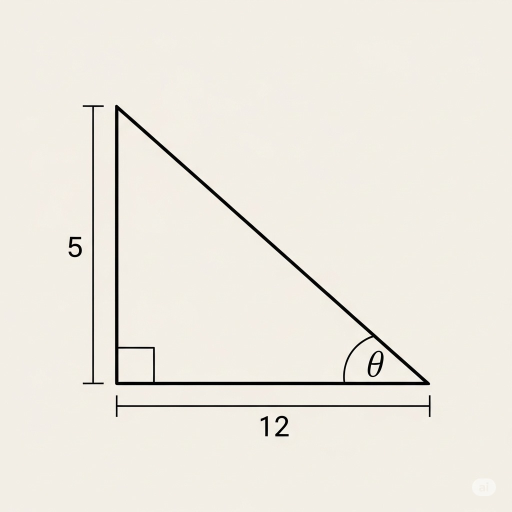
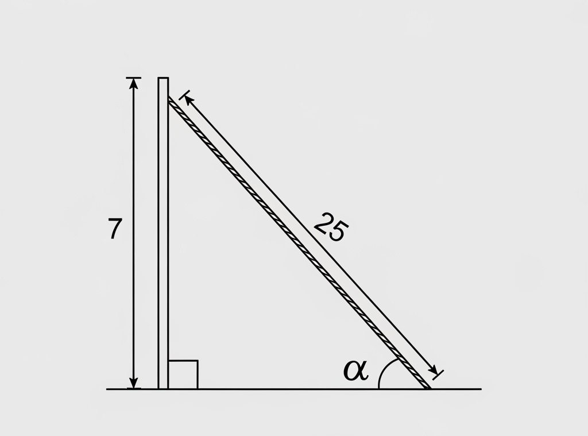
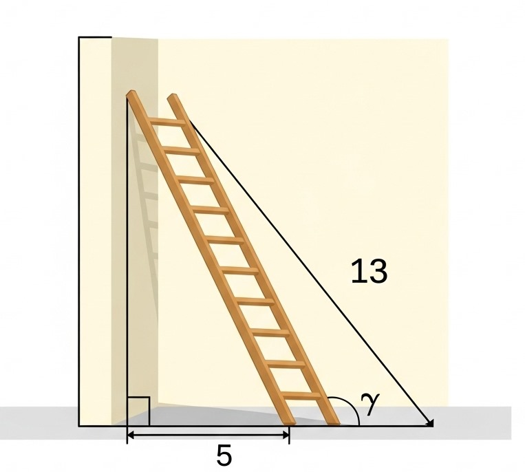

¡A Practicar Razones Trigonométricas!
Ejercicio 1
1. Dado el siguiente triángulo rectángulo, con cateto opuesto = 9, cateto adyacente = 12 e hipotenusa = 15. Calcula el valor de senα, cosα y tanα para el ángulo α (alpha). Exprese la respuesta en Fracción o Decimal.

Ejercicio 2
2. En un triángulo rectángulo, un cateto mide 8 y la hipotenusa mide 10. Si β (beta) es el ángulo opuesto al cateto de 8. Calcula el valor de senβ, cosβ y tanβ. Responda con una Fracción o con un número Decimal

Ejercicio 3
3. En un triángulo rectángulo, los catetos miden 5 y 12. Si el ángulo θ (theta) está junto al cateto de 12. Determina el valor de senθ, cosθ y tanθ. Responda con una Fracción o Decimal

Ejercicio 4
4. Un poste de 7 metros de altura tiene un cable tensor de 25 metros anclado al suelo. Calcula el seno, coseno y tangente del ángulo α (alpha) que forma el cable con el suelo Exprese la respuesta en Fracción o Decimal.

Ejercicio 5
5. Una escalera de 13 metros de largo está apoyada contra una pared. La base de la escalera está a 5 metros de la pared. Calcula el seno, coseno y tangente del ángulo γ (gamma) que forma la escalera con el suelo. Exprese su respuesta en una Fracción o un número Decimal

¡Felicidades!
Has completado todos los ejercicios de Razones Trigonométricas. ¡Sigue practicando!